openstack学习-网络管理 （转）
openstack的网络服务组件为neutron，它的设计目标是实现“网络即服务”。
设计上：遵循基于“软件定义网络（SDN)"的灵活和自动化原则
实现上：充分利用linux中各种网络相关的技术
物理网络与虚拟化网络
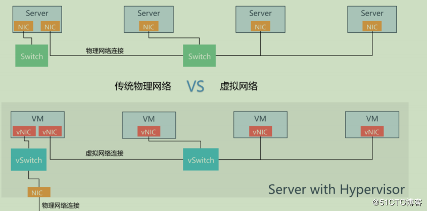
Neutron最为核心的工作是对二层物理网络的抽象与管理，物理服务器虚拟化后，虚拟机的网络功能由虚拟机网卡（vnic)提供，物理交换机也被虚拟化为虚拟交换机(vswitch)，各个vnic连接再vswitch的端口上，最后这些vswitch通过物理服务器的物理网卡访问外部的物理网络。
linux网络虚拟化实现技术
网络虚拟化主要由分为三个部分：
网卡虚拟化：TAP,TUN,VETH
交换机虚拟化：linux bridge,open vswitch
网络隔离：network-namespace
linux网卡虚拟化
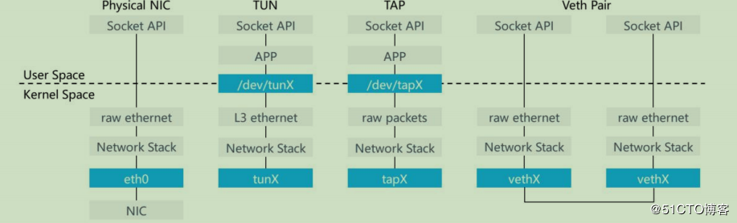
TAP设备：模拟一个二层的网络设备，可以接收和发送二层网络数据包
TUN设备：模拟一个三层的网络设备，可以接收和发送三层网络数据包
VETH:虚拟ethernet接口，通常以pair的方式出现，一端发出的网络数据包会被另一端接收，可以形成两个网桥之间的通道
TAP/TUN提供了一台主机内用户空间的数据传输机制，它虚拟机了一套网络接口，这套接口和物理的接口无任何区别，可以配置IP，可以路由流量，不同的是它流量只在主机内流通
veth-pari，是成对出现的网络设备，一端连接协议栈，一端连接彼此，数据从一端出，一端进。它的特性常常用来连接不同的虚拟网络组件，构建大规模的虚拟网络拓扑，比如连接linux bridge，ovs等，用于neutron，可以构建非常复杂的网络形态。
linux bridge
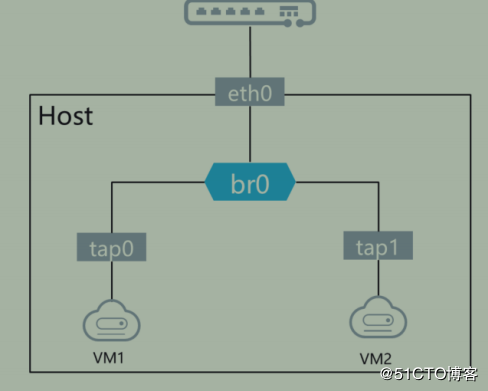
linux brigde：工作于二层的网络设备，功能类似物理交换机
brigde可以绑定linux上其他网络设备，并将这些设备虚拟化为端口
当一个网络设备被绑定到bridge上，就相当于物理交换机端口插入了一条连接终端的网线。
使用brctl命令配置linux brige
open vswitch
相比linux bridge的小规模的主机内部通信场景，open vswitch更适合大规模的多主机通信场景
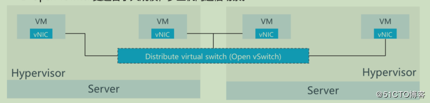
network namespace
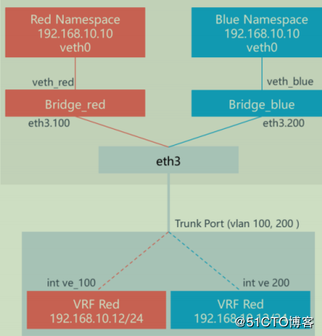
network namespace能创建多个隔离的网络空间，他们有独立的网络配置信息，例如网络设备，路由表，iptables等。
不同的网络空间中的虚拟机运行的时候仿佛就在自己的独立网络中。
network namespace通常于vrf(virtual routing fowarding虚拟路由转发）一起工作，vrf是一种ip技术，允许路由表的多个实例同时在同一个路由器上共存。
使用veth可以连接两个不同的网络命名空间，使用bridge可以连接多个不同的网络命名空间。
neutron
作为一种虚拟网络服务，为openstack计算提供网络连通和寻址服务。
neutron对网络进行了抽象，如下所示：
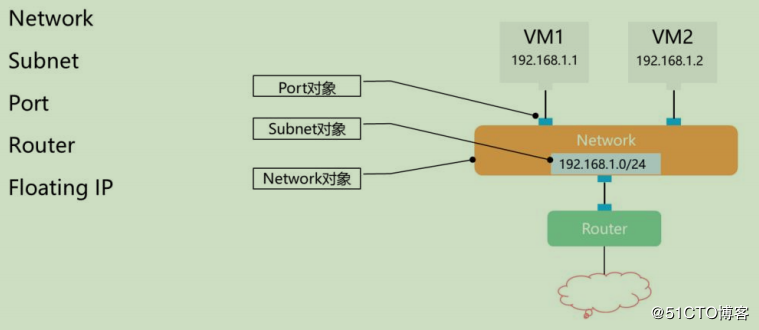
neutron支持多种类型的Network，包括local,flat,vlan,vxlan和gre
- local:与其他网络和节点隔离，该网络中的虚拟机只能与位于同一个节点上网络的虚拟机通信，local网络主要进行单机测试
- flat:无vlan标签的网络，该网络中虚拟机能与位于同一网络的虚拟机通信，并可以跨多个节点
- vlan:802.1q标签网络，就是跟真实vlan使用一致
- vxlan:基于隧道技术的overlay网络，主要构建大二层的数据中心网络
- gre：使用ip数据包的封装的隧道技术
subnet
就是子网，每个子网在neutron中需要定义ip地址和范围
subnet必须与network关联，可以附加dns,网关ip，静态路由
port
端口
逻辑网络交换机上的虚拟交换端口
虚拟机通过port附着到network上
port可以分配ip地址和mac地址
router
连接租户内同一个network或者不同network之间的子网，以及连接内外网
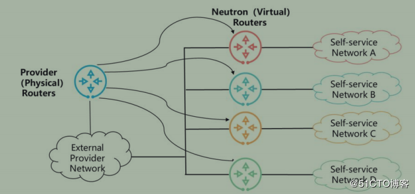
fixed ip
固定ip，分配到每个端口上的ip，类似于物理环境中配置到网卡上的ip
floating ip
floating ip（浮动ip)是external network创建的一种特殊的port，可以将floating ip绑定到任意network中的port上，底层会进行nat转发，将发送的浮动ip流量转发到该port上的对应固定ip上，外界可以通过浮动ip访问虚拟机，虚拟机也可以通过浮动ip访问外界
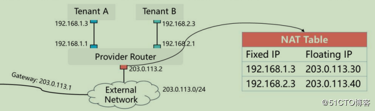
physical network
pytsical network，物理网络。
在物理网络环境中连接到openstack不同节点的网络，每个物理网络可以支持neutron中的一个或者多个虚拟网络。
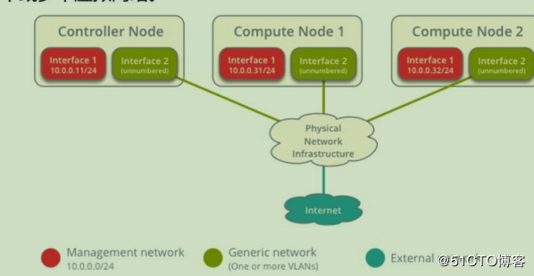
openstack必须通过physical network才能和真实物理网络通信
provider network
由openstack管理员创建，直接对应数据中心现有物理网络的一个网段
providr network通常使用vlan或者flat模式，可以在多个租户之间共享
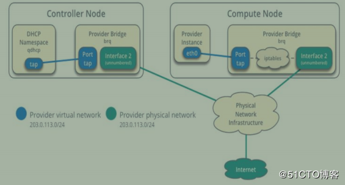
self-service network
自助服务网络，也叫租户网络或项目网络，它是由openstack租户创建的，完全虚拟的，只在本网络内部连通，不能在租户之间共享
self-servcie network通常使用vxlan或者gre模式，可以通过virtual router的snat与provider network通信
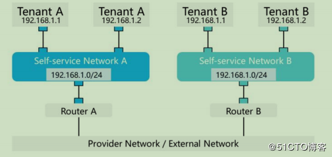
不同的self-service network中的网段可以相同，类似于物理环境中不同公司的内部网络
self-service network如果需要和外部网络通信，需要通过router，类似于物理环境中公司上网需要通过路由器或者防火墙。
External network
外部网络，也叫公共网络
它是一种特殊的provider network，连接的物理网络与数据中心或者internet相通，网络中的port可以访问外网
一般将租户的virtual router连接到该网络，并创建floating ip绑定虚拟机，实现虚拟机与外网通信
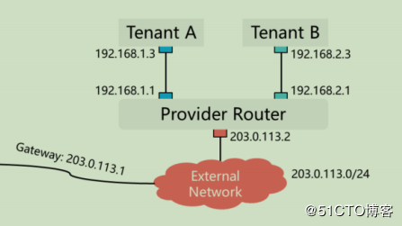
Exernal netwok类似于物理环境中直接使用公网ip网段，不同的是，openstack中external network对应的物理网络不一定能直连internet，有可能只是数据中心的一个内部私有网络。
securiy group
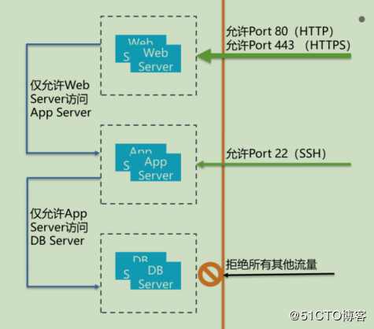
安全组，他的作用是在neutron port上的一组策略，规定了虚拟机入口和出口流量的规则
安全组基于linux iptables实现，默认拒绝所有流量，只有添加了放行规则的流量才允许通过
每个openstack项目中都有一个default默认安全组，默认包含如下规则-拒绝所有入口流量，允许所有出口流量
neutron架构与组件
架构图
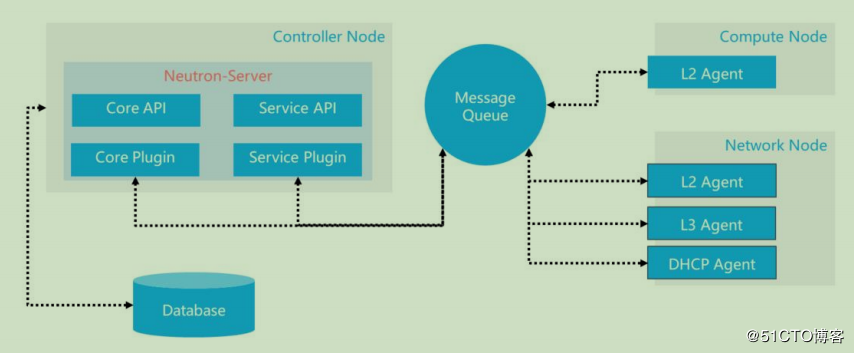
neutron架构原则
- 统一api
- 核心部分最小化
- 可插入式的开放架构
- 可扩展
message queue:neutron-sever通过消息列队与其他的neutron agents进行交换消息，但是这个消息列队不会用于neutron-server与其他openstack组件（如nova)进行交换消息
l2 agent:负责连接端口（ports)和设备，使他们处于共享的广播域，通常运行在hypervisor上
l3 agent:负责连接tenant网络到数据中心，或者连接到internet.在真实的部署环境中，一般都需要多个l3 agent同时运行。
dhcp agent:用于自动配置虚拟机网络
advance service:提供lb(负载均衡），防火墙等服务
架构说明
neutron的架构是基于插件的，不同的插件提供不同的网络服务，主要包含如下组件
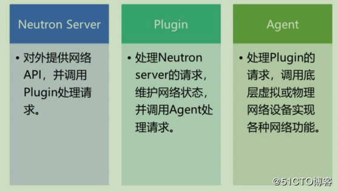
组件-neutron server
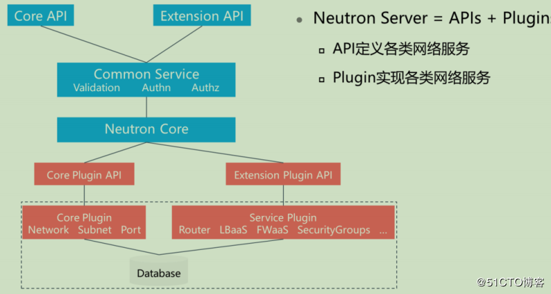
neutron server=apis+plugins，通过这种方式，可以自由对接不同网络后端能力
组件-core plugin
core plugin,主要是指ml2（modular layer 2) plugin，是一个开放架构，在plugin下，可以集成各个厂家，各种后端技术支持的layer 2网络服务。
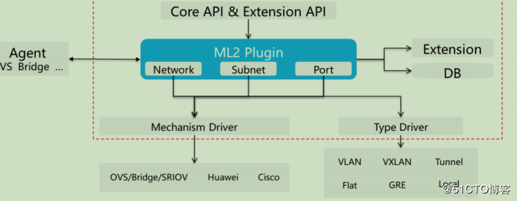
ml2 plugin的drivers主要分为以下两种：
typer driver:定义了网络类型，每种网络类型对应一个type driver
mechanism driver:对接各种二层网络技术和物理交换机设备，如ovs,linux bridge等，从typer driver获取相关的底层网络信息，确保对应的底层技术能够根据这些信息正确配置二层网络。
组件-service plugin
serivce plugin用于实现高阶网络服务，如路由，负载均衡，防火墙和***服务等
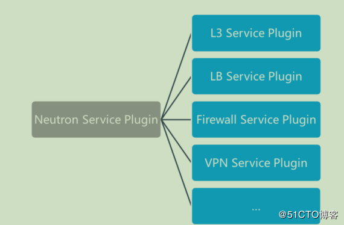
l3 service plugin主要提供路由，浮动ip服务等。
组件-agent
neutron agent向虚拟机提供二层和三层的网络连接，完成虚拟网络和物理网络之间的转换，提供扩展服务等
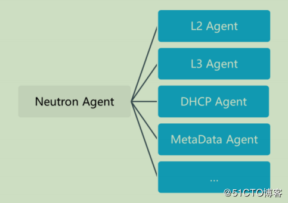
neutron网络流量分析
neutron支持多种网络技术和类型，可以自由组合各种网络模型。
生产中，openstack主要使用如下两种网络模型
- linux bridge+flat/vlan网络
提供简单网络互通，虚拟网络、路由、负载均衡等由物理设备提供，网络简单，高效，适合中小企业私有云网络环境 - open vswitch+vxlan网络
提供多租户，大规模网络隔离能力，适合大规模私有云和公有云网络场景
linux bridge+flat网络
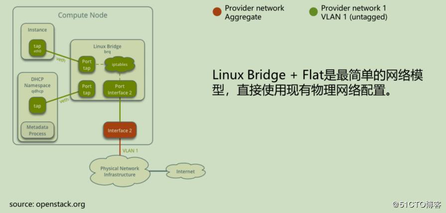
flat网络类似于使用网线直接连接物理网络，openstack不负责网络隔离
interface 2不带vlan tag
linux bridge+vlan网络
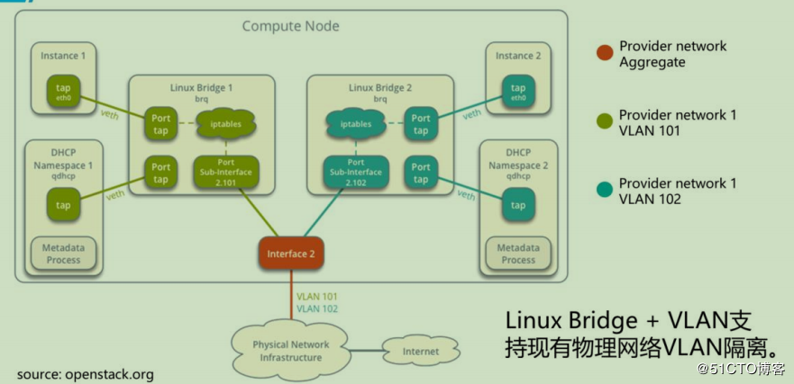
interface 2需要多个vlan，连接的物理交换机一般配置trunk模式，并允许这些vlan通过
使用linux bridge+vlan实现 provider network，网络流量可以分为如下几种：
南北向流量：虚拟机和外部网络通信的流量
东西向流量：虚拟机之间的流量
provider network和外部网络之间的流量，由物理网络设备负责交换和路由
使用固定ip的虚拟机南北流量分析
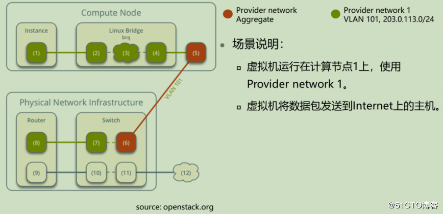
以下涉及计算节点1：
- 虚拟机（instance)数据包由虚拟网卡（1）通过veth pair转发到Provider Bridge上的端口（2）
- 安全组规则（3）检查防火墙和记录连接跟踪
- vlan子接口（4）将数据包转发到物理网卡（5）
- 物理网卡（5）将数据包打上vlan tag101,并将其转发到物理交换机端口（6）
以下涉及物理网络设备
- 交换机从数据包删除vlan tag 101,并将其转发到路由器（7）
- 路由器将数据包从provider network网关（8）路由到external网络网关（9）,并将数据包转发到external网络的交换机端口（10）
- 交换机将数据包转发到外部网络（11）
- 外部网络（12）接收数据包
同一个网络中虚拟机东西流量分析
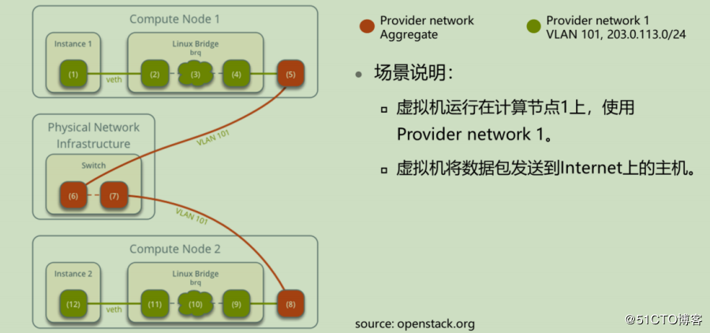
计算节点1：
- 虚拟机1数据包由虚拟网卡（1）通过veth pair转发到provider Bridge上端口（2）
- 安全组（3）检查防火墙和记录连接跟踪
- vlan子接口（4）将数据包转发到物理网卡（5）
- 物理网卡（5）将数据包打上vlan tag 101,并将其转发到物理交换机端口（6）
物理设备
- 交换机将数据包转发给计算节点2连接的交换机端口（7）
计算节点2
- 计算节点2的物理网卡（8）从数据包删除vlan tag 101，然后转发给vlan子接口（9）
- 安全组（10）检查防火墙和记录连接跟踪
- 虚拟网卡（11）通过veth pair将数据包转发给虚拟机2的网卡
不同的网络中的虚拟机东西流量
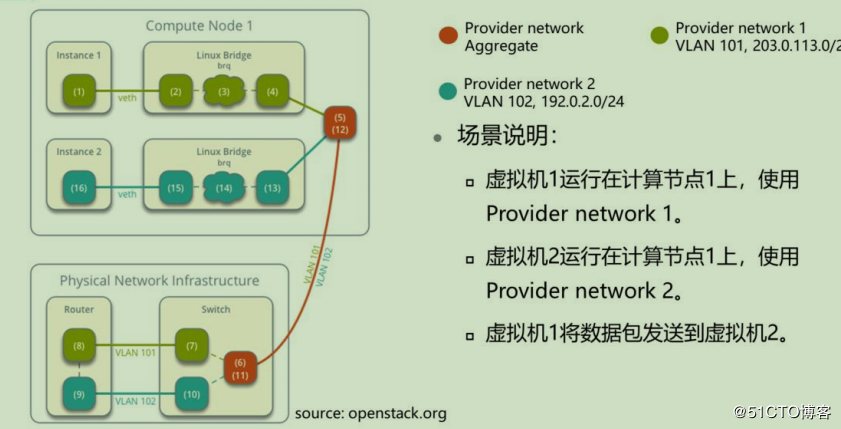
计算节点1
- 虚拟机1由虚拟机网卡（1）通过veth pair转发到provider bridg上的端口（2）
- 安全组（3）检查防火墙和记录连接跟踪
- vlan子接口（4）将数据包转发到物理网卡（5）
- 物理网卡（5）将数据包打上vlan tag 101,转发到物理交换机端口（6）
物理设备
- 交换机删除数据包vlan tag 101,并转发到路由器（7）
- 路由器将数据包从provider network1网关（8）转发到provider network2网关（9）
- 路由器将数据包发送到交换机端口（10）
- 交换机将数据包打上vlan tag 102,然后转发给计算节点1连接的端口（11）
以下涉及计算节点1
- 物理网卡（12）删除数据包vlan tag 102，然后转发vlan子接口（13）
- 安全组（14）检查防火墙和记录连接跟踪
- 虚拟网卡（15）通过veth pair将数据包转发给虚拟机2的网卡（16）
open vswitch +vxlan
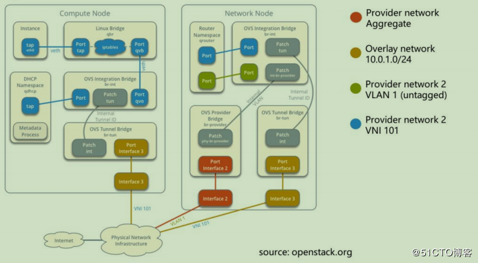
vxlan是虚拟可扩展的局域网，是一种oeverlay技术，通过三层网络来搭建虚拟的二层网络。
使用固定ip的虚拟机南北流量
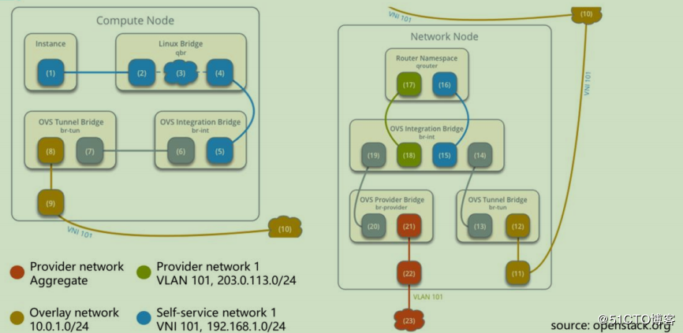
虚拟机运行在计算节点1上，使用self-service network 1,将数据包发送给internet上的主机
计算节点1
- 实例接口（1）通过veth将数据包转发到安全组网桥实例端口（2）
- 安全组网桥上的安全组（3）处理数据包防火墙和连接跟踪
- 安全组网桥OVS端口（4）通过veth将对数据包转发到OVS集成网桥(br-int)安全组端口（5）
- OVS集成网桥为（br-int)数据包添加内部vlan标记
- OVS集成网桥对内部隧道(br-tun)ID交换内部VLAN标记
- OVS集成网桥补丁接口（6）将数据包转发给OVS隧道补丁接口（7）
- OVS隧道网桥(8)使用vni 101包裹分组
- 用于覆盖网络的底层物理接口（9）经由覆盖网络（10）将分组转发到网络节点
网络节点
- 底层网络物理接口（11）将分组转发到OVS隧道桥（12）
- OVS隧道网桥解包并为其添加内部隧道ID
- OVS隧道网桥为内部VLAN标记交换内部隧道ID
- OVS隧道桥补丁端口（13）将分组转发到OVS集成桥接口补丁端口（14）
- 用于自助服务网络（15）的OVS集成桥接端口移除内部VLAN标记并将分组转发到路由器命名空间的自助服务网络接口（16）
- 路由器将数据包转发到提供商网络的OVS集成桥接端口（18）
- OVS集成桥将内部VLAN标记添加到数据包
- OVS集成桥接int-br-provider补丁端口（19）将数据包转发到OVS提供程序桥接phy-br-provider补丁端口（20）
- OVS提供程序将内部VLAN标记与实际VLAN标记101交换
- OVS桥接提供商网络端口（21）将分组转发到物理网络接口（22）
- 物理网络接口通过物理网络设备将数据包转发到Internet(23)
从外部访问带Floating IP的虚拟机
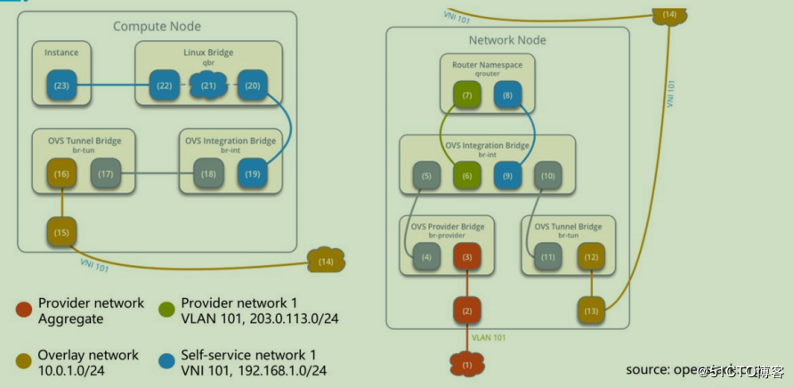
(直接放图吧。。。。。）
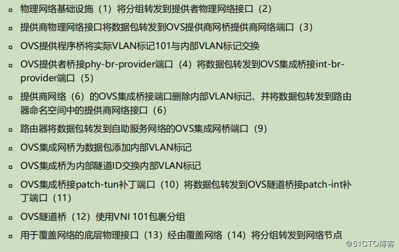
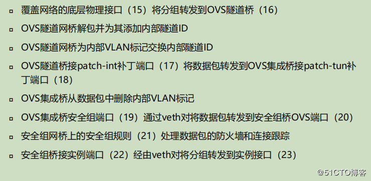
同一个网络中虚拟机东西流量
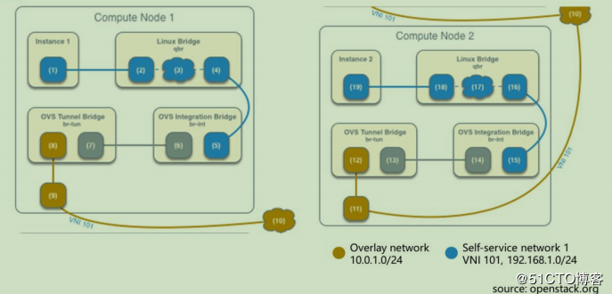
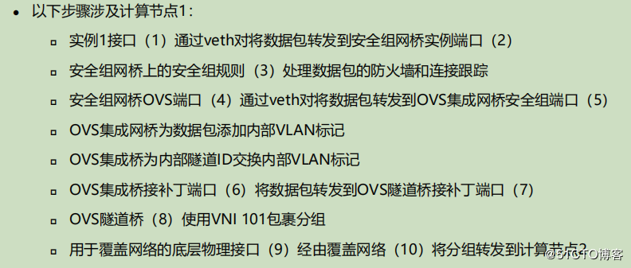
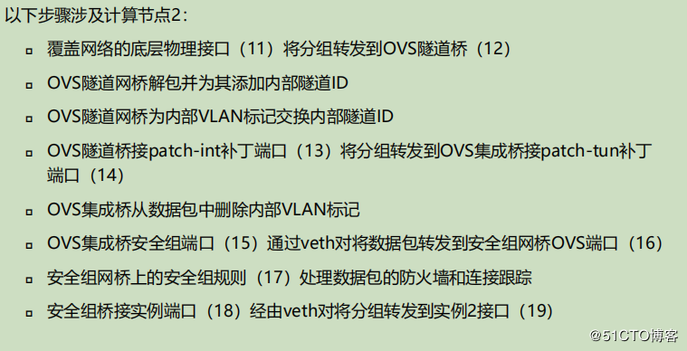
不同网络中虚拟机东西流量
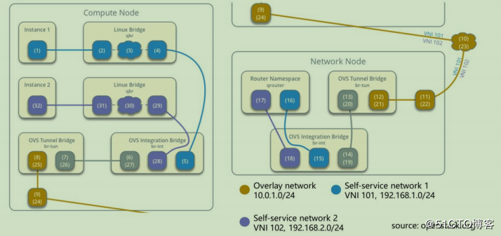
退出
[Ctrl+Enter快捷键提交]
【活动】腾讯云服务器推出云产品采购季 1核2G首年仅需99元
【推荐】Java经典面试题整理及答案详解（一）
【推荐】开放下载！《长安十二时辰》爆款背后的优酷技术秘籍首次公开
· 十天内四次熔断，美股可以抄底了吗？
· 网约车之痛：你打不到车，司机接不到单
· Google 推出「Works With Chromebook」配件认证计划
· 原阿里巴巴首席架构师钟华离职创业
· 图灵奖背后：一个奥斯卡拿到手软，一个公司卖了160亿
» 更多新闻...
2019-12-31 neutron flat和vxlan网络访问外网流量走向